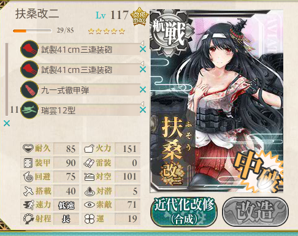
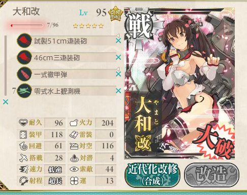

艦これ：迎撃！トラック泊地強襲（甲作戦）クリア……！
公開日：
周りが「甲」勲章をゲットしているのを尻目に、ちまちまと資源を貯めること1週間。雌伏の甲斐あって、ちゃんと甲作戦でぜんぶクリアできました。とりあえず E-5 の編成だけご報告。
E-5 は削り10戦、ラストアタック10戦でクリア。想定してたより資源消費が少なくて助かった。朝霜？ 知らない子ですね。
第一艦隊
はじめは「香取」を旗艦にしていたのだけど、ダメコンを付けて最後尾に回した（これが功を奏したのか、次のアタックでクリア）。旗艦ボーナスは案外大きいのかも。

以下、並び順は適当。

「大和」に 51cm 砲を載せると命中率の低下が心配だが（所謂、非フィット砲のペナルティ）、試製砲には命中率ボーナスがあるし、それほど気にしなくていいと思った。
「扶桑」姉妹を採用したのは、手持ちの「長門」型よりレベルが20上だったから。「瑞雲12型」で対空値を少し底上げできるのもうれしい。ギリギリの制空値では、ボス前の機動部隊の艦載機攻撃で事故ることが多いように思う。まぁ、気のせいかもしれないけど。
「烈風改」の代わりに爆戦を載せてもボスの制空値は足りるのだけど、前述の理由で「烈風」キャリアにしておいた。ちなみに、
- 爆戦仕様：ボス到達 1/5
- 烈風試用：ボス到達 3/5
だった。試行回数が少ないので何とも言えないけれど、個人的には対空特化にしておく方が好き。
「香取」はルート固定用。「明石」でもよいそうだけど、コストが高そうだし、「香取」のレベル上げをしておきたかった。
「香取」そのものには攻撃力が期待できないので、対空カットイン要因にしておいた。旗艦のときはダメコンの代わりに零観を載せておいたのだけど、外した方が H （ちょっと楽かな？）に行きやすい気がする。気のせいかもだけど。
参考：修理にかかる時間（多分）
| 艦種 | 入居時間倍率 | 燃料 | 鋼材 |
|---|---|---|---|
| 練習巡洋艦 | 1.0 | 1.5 | 0.8 |
| 工作艦 | 2.0 | 3.3 | 1.76 |
第二艦隊
カットインか連撃か……。個人的には運のよい艦をカットインにする方がいいかと思った。今回は砲戦でダメージを与えるのが難しかったが、カットイン装備なら魚雷戦でのダメージが見込める。
あと、探照灯をもたせた。旗艦に持たせておけば、攻撃の完了してやることのなくなった旗艦をデコイにできるので、多少なりとも後続艦を守ることができる、はず。
この作戦のために改三（drei）へ改造。魚雷まで打てる手数の多さは魅力だけど、あんまり期待はできない。とはいえ、「すげえ強い重巡」として使えるので、持っていれば入れない手はないと思った。
砲火力があるので、第一艦隊で打ち漏らした敵の掃討役として活躍。
「北上」はカットイン、「大井」は連撃。連撃の方が安定感はある気がする。
毎度毎度、ほんと頼りになる（白目
対空カットイン要員。艦隊に二隻いると安定するかな？
最初は「秋月」にしてたけど、夜戦がほとんど期待できないので途中から「時雨」で代用した。チョコ作りながら対空カットイン出すの、割とシュール。
〆は「川内」ちゃんに任せようと思ったけど、役に立たなかった。まぁ、終わり良ければ総て良し。
「川内」にするまえは「大淀」にして夜戦道具を持たせていたのだけど、やはり多少でも敵を落とせる可能性にのある艦にしておきたくなった。数値だけ見れば「神通」一択なのかもしれないが、ここは愛着で「川内」。役に立たなかったけど（大事なことなので2回言った）。
今回は夜偵を2機、艦隊に装備させたので、毎回夜間触接が発生して心強かったことも付記しておく。「川内」を養殖しておいてよかった。
戦闘経過（20戦目）
ボス前突破時の損害。「香取」は最初から戦力外なので、ほぼ無傷で突破できたとみなしてよい（ぉ
ボス戦は同航戦、航空優勢。被害なし。
第四艦隊の支援は……
しょっぱかった。
雷撃線の終了。雑魚を3艦とも潰したうえ、上3艦も半分以上削る理想的な展開。
夜戦突入。
探照灯と夜間触接の発動。ここで勝利をほぼ確信。
まず、「雪風」のカットインで姫を撃沈。
鬼の攻撃で「川内」大破。あんなに夜戦したがってたのに……いつもながら不憫な子だ。まぁ、そこがかわいいんだが。
ビス子、姫のしょぼい攻撃交換のあと、大井さんの連撃（101、109）がきまり……
完了。残り二人で残敵掃討がしたかったが、どっちもカットイン不発で取り逃がした。まぁ、しかたない。
資源消費は、削り・ラストアタックともに燃料・弾薬15000ってところ。思ったより少なくて済んでよかったけど、これから掘るのでどうせなくなる（